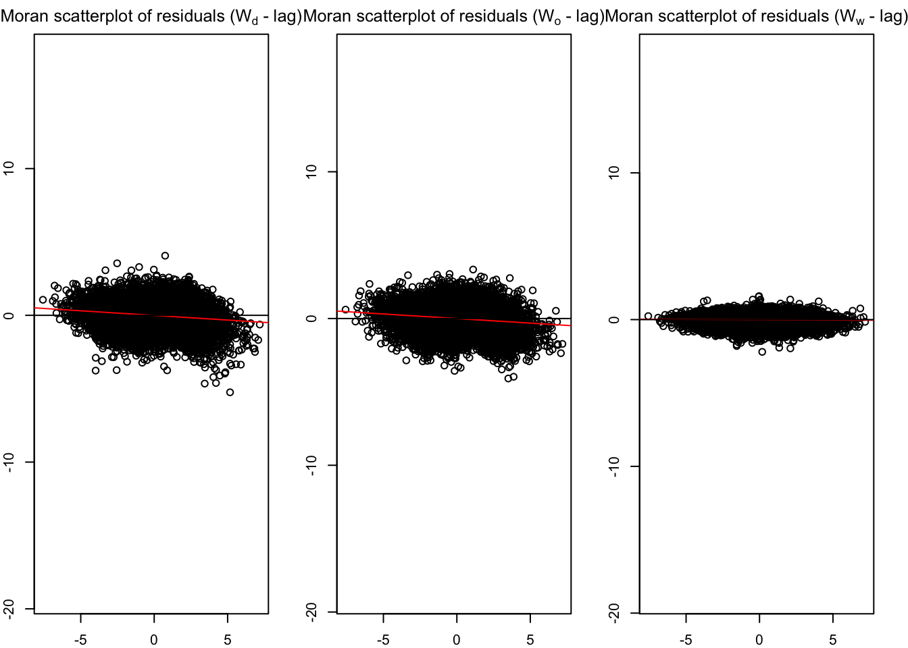
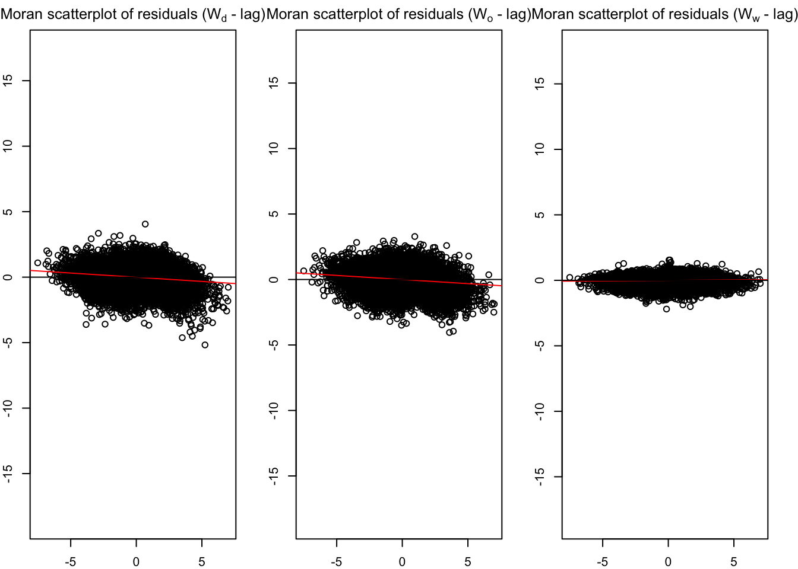

devtools::install_github("LukeCe/spflow", force = TRUE)In-Class Exercise 5:Spatial Econometric
Getting Started
pacman::p_load(tmap, sf, spdep, psp, Matrix, spflow, reshape2, knitr, tidyverse)Data Preparation
mpsz <- st_read(dsn = 'data/geospatial',
layer = 'MPSZ-2019') %>%
st_transform(crs = 3414)Reading layer `MPSZ-2019' from data source
`/Users/michaelberlian/Desktop/SMU Nov/ISSS624 GeoSpatial/ISSS624/In-class_Ex/In-class_Ex5/data/geospatial'
using driver `ESRI Shapefile'
Simple feature collection with 332 features and 6 fields
Geometry type: MULTIPOLYGON
Dimension: XY
Bounding box: xmin: 103.6057 ymin: 1.158699 xmax: 104.0885 ymax: 1.470775
Geodetic CRS: WGS 84busstop <- st_read(dsn = 'data/geospatial',
layer = 'BusStop') %>%
st_transform(crs = 3414)Reading layer `BusStop' from data source
`/Users/michaelberlian/Desktop/SMU Nov/ISSS624 GeoSpatial/ISSS624/In-class_Ex/In-class_Ex5/data/geospatial'
using driver `ESRI Shapefile'
Simple feature collection with 5159 features and 3 fields
Geometry type: POINT
Dimension: XY
Bounding box: xmin: 3970.122 ymin: 26482.1 xmax: 48280.78 ymax: 52983.82
Projected CRS: SVY21calculating bus stop in a subzone and filtering subzone without any bus stop
mpsz$`BUSSTOP_COUNT` <- lengths(
st_intersects(mpsz,busstop)
)mpsz_busstop <- mpsz %>%
filter(BUSSTOP_COUNT >= 1)centroids <- suppressWarnings({
st_point_on_surface(st_geometry(mpsz_busstop))
})listing the neighbor and its weight using different methods
mpsz_nb <- list(
'by_contiguity' = poly2nb(mpsz_busstop),
'by_distance' = dnearneigh(centroids,
d1 = 0, d2 = 5000),
'by_knn' = knn2nb(knearneigh(centroids,3))
)write_rds(mpsz_nb, "data/rds/mpsz_nb.rds")mpsz_nb <- read_rds('data/rds/mpsz_nb.rds')odbus6_9 <- read_rds('data/rds/odbus6_9.rds')busstop_mpsz <- st_intersection(busstop,mpsz) %>%
select(BUS_STOP_N, SUBZONE_C) %>%
st_drop_geometry()Warning: attribute variables are assumed to be spatially constant throughout
all geometriesod_data <- left_join(odbus6_9 , busstop_mpsz,
by = c("ORIGIN_PT_CODE" = "BUS_STOP_N")) %>%
rename(ORIGIN_BS = ORIGIN_PT_CODE,
ORIGIN_SZ = SUBZONE_C,
DESTIN_BS = DESTINATION_PT_CODE)Warning in left_join(odbus6_9, busstop_mpsz, by = c(ORIGIN_PT_CODE = "BUS_STOP_N")): Detected an unexpected many-to-many relationship between `x` and `y`.
ℹ Row 55491 of `x` matches multiple rows in `y`.
ℹ Row 161 of `y` matches multiple rows in `x`.
ℹ If a many-to-many relationship is expected, set `relationship =
"many-to-many"` to silence this warning.duplicate <- od_data %>%
group_by_all() %>%
filter(n()>1) %>%
ungroup()od_data <- unique(od_data)od_data <- left_join(od_data , busstop_mpsz,
by = c("DESTIN_BS" = "BUS_STOP_N")) Warning in left_join(od_data, busstop_mpsz, by = c(DESTIN_BS = "BUS_STOP_N")): Detected an unexpected many-to-many relationship between `x` and `y`.
ℹ Row 74 of `x` matches multiple rows in `y`.
ℹ Row 1379 of `y` matches multiple rows in `x`.
ℹ If a many-to-many relationship is expected, set `relationship =
"many-to-many"` to silence this warning.duplicate <- od_data %>%
group_by_all() %>%
filter(n()>1) %>%
ungroup()od_data <- unique(od_data)od_data <- od_data %>%
drop_na() %>%
group_by(ORIGIN_BS, DESTIN_BS) %>%
summarise(TRIPS = sum(TRIPS))`summarise()` has grouped output by 'ORIGIN_BS'. You can override using the
`.groups` argument.od_data <- read_rds('data/rds/od_data.rds')
flow_data <- read_rds('data/rds/flow_data.rds')In-class
Importing MPSZ data
mpsz_nb <- read_rds('data/rds/mpsz_nb.rds')
mpsz_flow <- read_rds('data/rds/mpsz_flow.rds')
mpsz_var <- read_rds('data/rds/mpsz_var.rds')Spflow network class
mpsz_net <- spflow_network(
id_net = 'sg',
node_neighborhood =
nb2mat(mpsz_nb$by_contiguity),
node_data = mpsz_var,
node_key_column = 'SZ_CODE'
)
mpsz_netSpatial network nodes with id: sg
--------------------------------------------------
Number of nodes: 313
Average number of links per node: 6.077
Density of the neighborhood matrix: 1.94% (non-zero connections)
Data on nodes:
SZ_NAME SZ_CODE BUSSTOP_COUNT AGE7_12 AGE13_24 AGE25_64
1 INSTITUTION HILL RVSZ05 2 330 360 2260
2 ROBERTSON QUAY SRSZ01 10 320 350 2200
3 FORT CANNING MUSZ02 6 0 10 30
4 MARINA EAST (MP) MPSZ05 2 0 0 0
5 SENTOSA SISZ01 1 200 260 1440
6 CITY TERMINALS BMSZ17 10 0 0 0
--- --- --- --- --- --- ---
308 NEE SOON YSSZ07 12 90 140 590
309 UPPER THOMSON BSSZ01 47 1590 3660 15980
310 SHANGRI-LA AMSZ05 12 810 1920 9650
311 TOWNSVILLE AMSZ04 9 980 2000 11320
312 MARYMOUNT BSSZ02 25 1610 4060 16860
313 TUAS VIEW EXTENSION TSSZ06 11 0 0 0
SCHOOL_COUNT BUSINESS_COUNT RETAILS_COUNT FINSERV_COUNT ENTERTN_COUNT
1 1 6 26 3 0
2 0 4 207 18 6
3 0 7 17 0 3
4 0 0 0 0 0
5 0 1 84 29 2
6 0 11 14 4 0
--- --- --- --- --- ---
308 0 0 7 0 0
309 3 21 305 30 0
310 3 0 53 9 0
311 1 0 83 11 0
312 3 19 135 8 0
313 0 53 3 1 0
FB_COUNT LR_COUNT COORD_X COORD_Y
1 4 3 103.84 1.29
2 38 11 103.84 1.29
3 4 7 103.85 1.29
4 0 0 103.88 1.29
5 38 20 103.83 1.25
6 15 0 103.85 1.26
--- --- --- --- ---
308 0 0 103.81 1.4
309 5 11 103.83 1.36
310 0 0 103.84 1.37
311 1 1 103.85 1.36
312 3 11 103.84 1.35
313 0 0 103.61 1.26Spflow network pair
mpsz_net_pairs <- spflow_network_pair(
id_orig_net = 'sg',
id_dest_net = 'sg',
pair_data = mpsz_flow,
orig_key_column = 'ORIGIN_SZ',
dest_key_column = 'DESTIN_SZ'
)
mpsz_net_pairsSpatial network pair with id: sg_sg
--------------------------------------------------
Origin network id: sg (with 313 nodes)
Destination network id: sg (with 313 nodes)
Number of pairs: 97969
Completeness of pairs: 100.00% (97969/97969)
Data on node-pairs:
DESTIN_SZ ORIGIN_SZ DISTANCE TRIPS
1 RVSZ05 RVSZ05 0 67
314 SRSZ01 RVSZ05 305.74 251
627 MUSZ02 RVSZ05 951.83 0
940 MPSZ05 RVSZ05 5254.07 0
1253 SISZ01 RVSZ05 4975 0
1566 BMSZ17 RVSZ05 3176.16 0
--- --- --- --- ---
96404 YSSZ07 TSSZ06 26972.97 0
96717 BSSZ01 TSSZ06 25582.48 0
97030 AMSZ05 TSSZ06 26714.79 0
97343 AMSZ04 TSSZ06 27572.74 0
97656 BSSZ02 TSSZ06 26681.7 0
97969 TSSZ06 TSSZ06 0 270mpsz_multi_net <- spflow_network_multi(mpsz_net, mpsz_net_pairs)
mpsz_multi_netCollection of spatial network nodes and pairs
--------------------------------------------------
Contains 1 spatial network nodes
With id : sg
Contains 1 spatial network pairs
With id : sg_sg
Availability of origin-destination pair information:
ID_ORIG_NET ID_DEST_NET ID_NET_PAIR COMPLETENESS C_PAIRS C_ORIG C_DEST
sg sg sg_sg 100.00% 97969/97969 313/313 313/313Multi-Collinearity Check
cor_formula <- log(1 + TRIPS) ~
BUSSTOP_COUNT +
AGE7_12 +
AGE13_24 +
AGE25_64 +
SCHOOL_COUNT +
BUSINESS_COUNT +
RETAILS_COUNT +
FINSERV_COUNT +
P_(log(DISTANCE + 1))
cor_mat <- pair_cor(
mpsz_multi_net,
spflow_formula = cor_formula,
add_lags_x = FALSE)
colnames(cor_mat) <- paste0(
substr(
colnames(cor_mat),1,3
), "..."
)
cor_image(cor_mat)
Model Calibration
base_model <- spflow(
spflow_formula = log(1+TRIPS) ~
O_(BUSSTOP_COUNT +
AGE25_64) +
D_(SCHOOL_COUNT +
BUSINESS_COUNT +
RETAILS_COUNT +
FINSERV_COUNT) +
P_(log(DISTANCE + 1)),
spflow_networks = mpsz_multi_net
)
base_model--------------------------------------------------
Spatial interaction model estimated by: MLE
Spatial correlation structure: SDM (model_9)
Dependent variable: log(1 + TRIPS)
--------------------------------------------------
Coefficients:
est sd t.stat p.val
rho_d 0.680 0.004 192.555 0.000
rho_o 0.678 0.004 187.729 0.000
rho_w -0.396 0.006 -65.589 0.000
(Intercept) 0.410 0.065 6.265 0.000
(Intra) 1.313 0.081 16.263 0.000
D_SCHOOL_COUNT 0.017 0.002 7.885 0.000
D_SCHOOL_COUNT.lag1 0.002 0.004 0.551 0.582
D_BUSINESS_COUNT 0.000 0.000 3.015 0.003
D_BUSINESS_COUNT.lag1 0.000 0.000 -0.249 0.803
D_RETAILS_COUNT 0.000 0.000 -0.306 0.759
D_RETAILS_COUNT.lag1 0.000 0.000 0.152 0.879
D_FINSERV_COUNT 0.002 0.000 6.787 0.000
D_FINSERV_COUNT.lag1 -0.002 0.001 -3.767 0.000
O_BUSSTOP_COUNT 0.002 0.000 6.806 0.000
O_BUSSTOP_COUNT.lag1 -0.001 0.000 -2.364 0.018
O_AGE25_64 0.000 0.000 7.336 0.000
O_AGE25_64.lag1 0.000 0.000 -2.797 0.005
P_log(DISTANCE + 1) -0.050 0.007 -6.792 0.000
--------------------------------------------------
R2_corr: 0.6942938
Observations: 97969
Model coherence: Validatedold_par <- par(mfrow = c(1,3),
mar = c(2,2,2,2))
spflow_moran_plots(base_model)
corr_residual <- pair_cor(base_model)
colnames(corr_residual) <- substr(colnames(corr_residual),1,3)
cor_image(corr_residual)
model control
spflow_formula <- log(1 + TRIPS) ~
O_(BUSSTOP_COUNT +
AGE25_64) +
D_(SCHOOL_COUNT +
BUSINESS_COUNT +
RETAILS_COUNT +
FINSERV_COUNT) +
P_(log(DISTANCE + 1))
model_control <- spflow_control(
estimation_method = 'mle',
model = "model_8"
)
mle_model8 <- spflow(
spflow_formula,
spflow_networks = mpsz_multi_net,
estimation_control = model_control
)
mle_model8--------------------------------------------------
Spatial interaction model estimated by: MLE
Spatial correlation structure: SDM (model_8)
Dependent variable: log(1 + TRIPS)
--------------------------------------------------
Coefficients:
est sd t.stat p.val
rho_d 0.689 0.003 196.834 0.000
rho_o 0.687 0.004 192.213 0.000
rho_w -0.473 0.003 -142.469 0.000
(Intercept) 1.086 0.049 22.274 0.000
(Intra) 0.840 0.075 11.255 0.000
D_SCHOOL_COUNT 0.019 0.002 8.896 0.000
D_SCHOOL_COUNT.lag1 0.019 0.004 5.129 0.000
D_BUSINESS_COUNT 0.000 0.000 3.328 0.001
D_BUSINESS_COUNT.lag1 0.000 0.000 1.664 0.096
D_RETAILS_COUNT 0.000 0.000 -0.414 0.679
D_RETAILS_COUNT.lag1 0.000 0.000 -0.171 0.864
D_FINSERV_COUNT 0.002 0.000 6.150 0.000
D_FINSERV_COUNT.lag1 -0.003 0.001 -4.601 0.000
O_BUSSTOP_COUNT 0.003 0.000 7.676 0.000
O_BUSSTOP_COUNT.lag1 0.000 0.000 0.552 0.581
O_AGE25_64 0.000 0.000 6.870 0.000
O_AGE25_64.lag1 0.000 0.000 -0.462 0.644
P_log(DISTANCE + 1) -0.125 0.005 -22.865 0.000
--------------------------------------------------
R2_corr: 0.6965976
Observations: 97969
Model coherence: Validatedold_par <- par(mfrow = c(1,3),
mar = c(2,2,2,2))
spflow_moran_plots(mle_model8)
par(old_par)